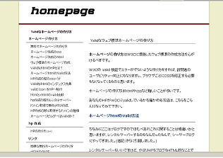
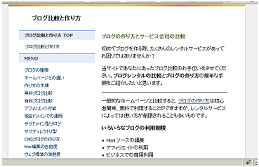

無料ブログのテンプレートの作り方
このブログのテンプレートは昨日までは茶色っぽい、シーサーブログにデフォルトでついているテンプレートをつかっていたんですけど、今日これにかえてみました。
このテンプレートは、シーサーブログに関する無料レポートをダウンロードしてよんだもののなかに、テンプレートを添付してくれていたのがあったんでためしてみました。
テンプレートは自分で作成
ウェブ上で無料で配布してあるテンプレートのなかには強制的に作者のサイトへリンクがはられるものばかりです。
ブログの全ページからテンプレートのダウンロードページにリンクを貼ってしまうとＳＥＯ的に非常にもったいないと思います。
けれども、無料レポートのなかにはまったく被リンクを要求しない良心的なテンプレートがいろいろとあるのでそういうのを選んで使用するといいと思います。
無料レポートにはときどきかなり役に立つものが結構あります。時間があれば、ちょくちょくダウンロードするのもいいのではないかなと思います。
無料ブログのテンプレートを自分で作成する場合は、ある程度参考にするサイトがやはり必要なのではないかなと思います。
ゼロからテンプレートを作成した人は最初のひとりだけで、そのあとはなにかしら誰かのテンプレートを改良したり、工夫したりして作成したものだと思います。
けれども、著作権に配慮しなくてはいけないので、最低限の参考にするのにとどめるべきなのではないかなと思います。
たぶん、参考にしていいのはＩＤタグの配置方法ぐらいまでじゃないかと思います。
ヘッダー、フッターなどのレイアウトは、だいたいどの無料ブログでも似たような感じになっています。
ブログテンプレート作成の場合は、必ずhtmlとCSSのセットになるような形で作成ればいいと思います。
ブログサービスによって、htmlタグを変えてしまうと、記事投稿をしても出力されないという事態も生じるかと思うので、なるべくならhtmlはブログサービスのデフォルトのままで使用し、対応するCSSの部分を自分で作成するという感じになると思います。
なので、ブログのテンプレート作成というのは、実質的にCSSのスタイルシートを作成するということになるかと思います。
このブログで参考にしているサイトはこんな感じです。
- レイアウト：エキサイトニュース
- フォント：マイコミ
- ナビゲーション：Movable Type
- 関連記事：ヤフーニュース
- カテゴリナビ：グーグルとヤフーの検索結果
そのほか、グーグルヘルプやヤフーヘルプなどを参考に、SEO的にまずくらないような html の配置方法にカスタマイズしています。
また、グラデーション素材を作成したり、ブログの背景画像を作成したりといろいろな方法がございますので、当ブログで紹介している無料ツールを使用しながら、いろいろ作成してみてください。
例えば、私は色彩やフォントなどをちょこっとかえて、素朴なテンプレートを作ってます。


画像や写真を使えば、もっとかっこよくなるとは思いますが、グーグルやヤフーなど、たいていのサイトではシンプルな色彩のサイトが多いです。
ただ、自動で出力される url などの独自タグはブログサービスによって違うので、それぞれの仕様を確認してみるといいと思います。
- FirebugとシーサーブログＣＳＳ
ファイアーフォックス３が出てきたんでアドオンをレビューしようって思います。ブログの作成に役立つアドオンをいくつかインストールしてみたのですが、おっ！ていうのがあったりしてなかなかお役立ちです。なかでも... - ＨＴＭＬと無料ブログ
ＨＴＭＬの知識は無料ブログを作成する場合、それほど必要ないかと思いますが知っておいた方が楽しいです。というわたしもそれほど詳しくないのですが、ＨＴＭＬっていうのはブラウザが画面でページを表示する際のも... - ブログのタイトルバナー画像の作り方
ブログ名やサイト名などブログの顔になるタイトルバナーですが、アイコンや画像を作成しておしゃれバナーを作成している人が多いようです。このブログでもいちおうはタイトルバナーをフッターに画像として作っている... - ブログにグラデーションな背景画像の作り方
ブログの背景画像をグラデーションなふいんきにしたい場合は、無料ソフトツールなどを使用しながらグラデーション素材を作成し、ＣＳＳで背景画像として組み込めば簡単にカスタマイズできるのではないかなと思います... - キャプチャー画像をブログへ貼付方法
以前の記事でキャプチャー画像の作り方について書いていたのですが、今度はそのキャプチャーした画像の加工方法について調べてみたいと思います。さらに、画像をブログへ貼付する際の html タグは &... - CSSで初心者簡単ブログカスタマイズ方法
初めてブログを作る際は文字の大きさや行間などを自分好みにしようと思っても、どこをどう変更していいものやらさっぱりなんですが、スタイルシートの CSS の部分をブログカスタマイズするといいようなんです。... - 無料ブログの色彩ツール
無料ブログを作成する際に色彩を決めるのはなかなか面倒くさいものです。スタイルシートで背景色を決めたり、リンクに色を決めたり、ブログを読みやすくするために文字の色彩をかえてみたりと悩むこともあるかと思い... - 見やすいブログやサイトのフォント
ブログのスタイルシートでフォントを指定すると意図したフォント順で表示されるようになりますが、見やすいサイトやブログではどのようなフォントを使用しているのでしょうか。前の記事でおしゃれフォントの記事を書...